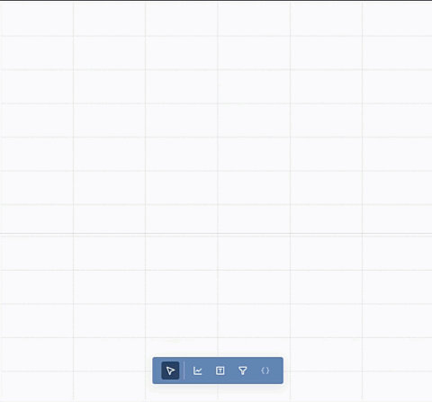
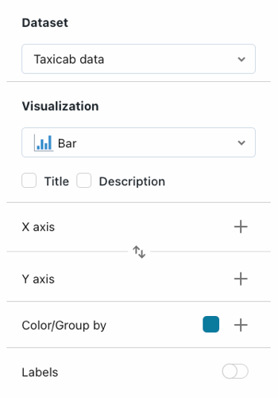
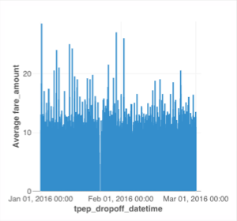

Create and share visualizations using Lakeview dashboards
Preview
This feature is in Public Preview.
Learn how to use the Lakeview dashboard UI to create and share insights. For information about the Lakeview dashboard model and features, see What are Lakeview dashboards?.
The steps in this quickstart guide you through the process of building and sharing the following dashboard:
Requirements
You are logged into a Databricks workspace.
You have the SQL entitlement in that workspace.
You have at least Can Use access to one or more SQL warehouses.
Step 1. Create a Lakeview dashboard
Click  New in the sidebar and select Lakeview Dashboard.
New in the sidebar and select Lakeview Dashboard.
By default, your new dashboard is automatically named with its creation timestamp and stored in your /Workspace/Users/<username> directory.
Note
You can also create a new Lakeview dashboard from the Dashboards listing page or the Add button in the Workspace menu.
Step 2. Define datasets
The Canvas tab is for creating and editing widgets like visualizations, text boxes, and filters. The Data tab is for defining the underlying datasets used in your dashboard.
Note
All users can write SQL queries to define a dataset. Users in Unity Catalog-enabled workspaces can instead select a Unity Catalog table or view as a dataset.
Click the Data tab.
Click Create from SQL and paste in the following query. Then click Run to return a collection of records.
SELECT T.tpep_pickup_datetime, T.tpep_dropoff_datetime, T.fare_amount, T.pickup_zip, T.dropoff_zip, T.trip_distance, T.weekday, CASE WHEN T.weekday = 1 THEN 'Sunday' WHEN T.weekday = 2 THEN 'Monday' WHEN T.weekday = 3 THEN 'Tuesday' WHEN T.weekday = 4 THEN 'Wednesday' WHEN T.weekday = 5 THEN 'Thursday' WHEN T.weekday = 6 THEN 'Friday' WHEN T.weekday = 7 THEN 'Saturday' ELSE 'N/A' END AS day_of_week, T.fare_amount, T.trip_distance FROM ( SELECT dayofweek(tpep_pickup_datetime) as weekday, * FROM `samples`.`nyctaxi`.`trips` WHERE trip_distance > 0 AND trip_distance < 10 AND fare_amount > 0 AND fare_amount < 50 ) T ORDER BY T.weekday
Inspect your results. The returned records appear under the editor when the query is finished running.
Change the name of your query. Your newly defined dataset is autosaved with the name, “Untitled dataset.” Double click on the title to rename it, “Taxicab data”.
Note
This query accesses data from the samples catalog on Databricks. The table includes publicly available taxicab data from New York City in 2016. Query results are limited to valid rides that are under 10 miles and cost less than fifty dollars.
Step 3. Create and place a visualization
To create your first visualization, complete the following steps:
Click the Canvas tab.
Click Create a visualization to create a visualization widget and use your mouse to place it in the canvas.

Step 4. Configure your visualization
When a visualization widget is selected, you can use the configuration panel at the right side of the screen to display your data. As shown in the following image, only one Dataset has been defined, and it is selected automatically.

Setup the X-axis
If necessary, select Bar from the Visualization dropdown menu.
Click the to choose the data presented along the X-axis. You can use the search bar to search for a field by name. Select tpep_dropoff_datetime.
Click on the field name you selected to view additional configuration options.
As the Scale Type, select Temporal.
For the Transform selection, choose HOURLY.
Setup the Y-axis
Click the next to the Y-axis to select the fare_amount for the data presented along the y-axis.
Click the field name you selected to view additional configuration options.
As the Scale Type, select Quantitative.
For the Transform selection, choose AVG.
Optional: Create Lakeview visualizations with Databricks Assistant
You can create visualizations using natural language with the Databricks Assistant.
To generate the same chart as above, choose one of the following options:
To create a new visualization widget:
Click Create a visualization. The widget appears with the prompt: Describe a chart….
Type “Bar chart of average fare amount over hourly dropoff time”
To edit an existing widget:
Click the Assistant icon. An input prompt appears. Enter a new prompt for your chart. You can ask for a new chart entirely, or aks for modifications. For example, you can type, “Switch to a line chart” to modify the chart type.
Step 5. Clone and modify a visualization
You can clone an existing chart to create a new visualization.
Right-click on your existing chart and then click Clone.
With your new chart selected, use the configuration panel to change the X axis field to tpep_pickup_datetime. If necessary, choose HOURLY under the Transform type.
Use the Color/Group by selector to choose a new color for your new bar chart.
Step 6. Create a scatterplot
Create a new scatterplot with colors differentiated by value. To create a scatterplot, complete the following steps:
Click the Create a visualization icon to create a new visualization widget.
Configure your chart by making the following selections:
Dataset: Taxicab data
Visualization: Scatter
X axis: trip_distance
Y axis: fare_amount
Color/Group by: day_of_week
Note
Once colors have been auto-assigned by category, you can change the color associated with a particular value by clicking on the color in the configuration panel.
Step 7. Create dashboard filters
You can use filters to make your dashboards interactive. In this step, you create filters on three fields.
Create a date range filter
Click Filter to add a filter widget. Place it on the canvas.
From the Filter dropdown menu in the configuration panel, select Date range picker.
Select the Title checkbox to create a title field on your filter. Click on the placeholder title and type Date range to retitle your filter.
From the Filter on menu, select Taxicab_data.tpep_pickup_datetime.
Create a single-select dropdown filter
Click Filter to add a filter widget. Place it on the canvas.
From the Filter dropdown menu in the configuration panel, select Dropdown (single-select).
Select the Title checkbox to create a title field on your filter. Click on the placeholder title and type Dropoff zip code to retitle your filter.
From the Filter on menu, select Taxicab_data.dropoff_zip.